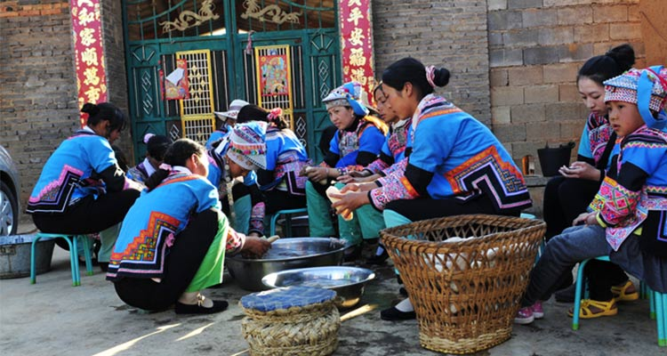

昨天是农历二月二龙抬头，标志着大地的复苏，新的一年生产劳作的开始，人们经过了一个冬天的休整，在新的一年又要开始一段新的旅程。而二月初三，位处中国西南的彝族人民都要举行祭龙仪式，因为祭龙不仅是彝族祈求生育繁衍的日子，也是宣告一年春耕播种的正式开始。这种对龙的图腾传统里有对繁殖的成分，在彝族人民看来，大地母亲有着无限的孕育生殖能力。因此，祭龙既有春天播种的象征意义，又有传宗接代的含义。
据彝族长者介绍，他们的祭龙节很灵，每次都会下雨。老人们能从猪血的多少、擦钱纸的燃纹，判断出下雨的多少和下雨的日期。众人皆知彝族火把节尚火，汉族春节舞龙，但彝族祭龙节拜龙求雨祈福却鲜为人知。白沙村的祭龙节仿佛一直都被蒙着一层神秘的色彩。会理县白沙村古老又神奇的祭龙仪式，至今历久不衰。每年人们都会挑选一个属龙的吉日，在大黑山龙洞水口祭龙。这里树木参天，泉水喷涌，溪流潺潺，是每年仪式上祭山泉龙口、祈求水龙常在，泼水求雨、驱避农业干旱以及生火献饭的神圣之地。
龙为水神说正好与五行中的“水生木”之说相合，谷物为植物，属于五行之“木”，故业农者必祀水神，稻作民族更应如此。龙作为图腾遗留物，是地位最高的神，也代表了祖先，从这个意义上说，祭龙又是祭祖。请求祖先赐福禳灾，保佑全村人风调雨顺、五谷丰登、平安幸福。+祭龙完毕后，人们在铺着松针的地上摆开宴席。炊烟袅袅，全村沉浸在酒香和肉香之中。这时，筛糠、对山歌、跳达体舞等传统娱乐也在欢乐的气氛中开始了。
1、祭龙节是他们一年之中最盛大、最隆重、最神圣的带有宗教色彩的民族传统节日之一；
2、其实在每一个传统节日中，我们都可以看到在中华文化传承下，从古至今的人们对美好生活的追求和向往。